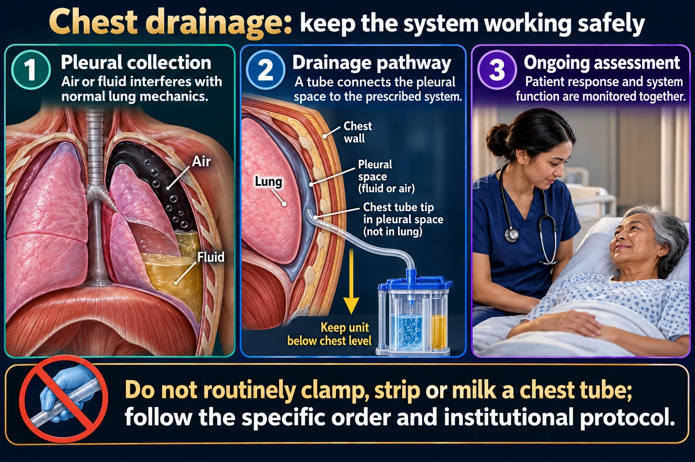

Cardiac catheterization, post-op care, and the 3-chamber chest drainage system
Whichever defect a child has — hole, block, or blue baby — surgery or a cardiac catheter procedure is usually the definitive fix. This page is the after: what you assess before, what you watch for after, and how to manage the chest tube that comes home from the OR with almost every open-heart repair. Know your 3 chambers cold — it is one of the most-tested skills in peds cardiac nursing.
📄 Simple Nursing original — opens in Drive →
🫁 Picture it: tension pneumothorax →
Same drawing as the rest of the set. Every defect on every page — hole, block, or blue baby — can end up here: the OR or the cath lab.

Do not routinely clamp, strip or milk a chest tube; follow the specific order and institutional protocol.
Pleural collection
Air or fluid interferes with normal lung mechanics.
Drainage pathway
A tube connects the pleural space to the prescribed system.
Ongoing assessment
Patient response and system function are monitored together.
Patient
Assess breathing, oxygenation, pain and the insertion site.
System
Keep connections secure and the unit in the prescribed position; avoid dependent loops.
Concerns
Unexpected bleeding, respiratory decline or disconnection requires immediate assessment.
| Group | Shunt / flow | Fixed by |
|---|---|---|
| 💛 ACYANOTIC | LEFT → RIGHT, ↑ pulmonary flow | Device closure (cath) or surgical patch |
| 🧡 OBSTRUCTIVE | narrowed road | Balloon valvuloplasty/angioplasty (cath) or surgical repair |
| 💜 CYANOTIC | RIGHT → LEFT, ↓ pulmonary flow | Surgical repair — usually open-heart |
| MIXED | both ways | Staged surgical repair |
| Cardiac catheterization | Open-heart surgery | |
|---|---|---|
| Access | Femoral vein/artery — no chest incision | Sternotomy (chest incision) |
| Used for | ASD/VSD/PDA device closure, balloon valvuloplasty, balloon angioplasty ± stent for coarctation | Complex repairs — Tetralogy, transposition, large VSDs, coarctation resection |
| Chest tube? | Usually none | Yes — placed during surgery to drain the chest |
| Recovery focus | Access-site & pulse checks | Incision, pain, respiratory effort, chest tube |
Whatever you assess before the procedure is what you compare everything to afterward.
Cardiac catheterization uses iodinated contrast dye. An iodine or shellfish allergy history must be flagged before the procedure — the team may premedicate or choose an alternate approach.
Children are typically kept NPO around 4–6 hours before a cath or surgery requiring sedation; infants often get a shorter NPO window because they tolerate fasting less well and are at higher risk for hypoglycemia. Exact hours vary by facility protocol and anesthesia team — always confirm the order.
Age-appropriate teaching, honest and simple explanations, comfort items from home, and — when the unit allows it — a parent present for induction can meaningfully reduce a child's fear and distress.
A thin catheter is threaded through the femoral vessels up to the heart. It can be diagnostic (pressures, oxygen saturations, angiography to map the anatomy) or interventional — closing a hole with a device, opening a narrowed valve with a balloon, or placing a stent in a narrowed vessel.
Answer first: after a cath, the #1 priority is the pulse below the site. After surgery, it is airway/breathing and the incision.
Check the pulse below (distal to) the femoral access site frequently in the first hours — often per protocol every 15 minutes initially, then tapering.
Expected/normal: a weak but present pulse right after the procedure, warm foot, brisk capillary refill.
REPORT NOW A cool, cold, pale, or pulseless extremity distal to the site — this can mean arterial occlusion or thrombosis and needs the provider immediately.
Keep the leg straight for roughly 4–8 hours post-cath (per facility protocol) to protect the access site from bleeding, and keep the child on bedrest during that window.
Elevate the head of the bed after surgery — this reduces the work of breathing.
Manage pain proactively so the child can breathe deeply, cough, and reposition — undertreated pain slows respiratory recovery.
Restrict heavy lifting/strenuous activity for roughly 3–4 weeks after sternotomy while the bone and incision heal — follow the surgeon's specific activity order.
Teach families to report fever, a warm/red incision, or foul-smelling purulent drainage — signs of surgical site infection.
Chest tubes drain excess blood, fluid, and air after cardiac surgery so the lungs can fully re-expand and blood doesn't collect around the heart.
The nearest chamber to the patient. All drainage flows in here first and collects in graduated (marked) columns so you can measure the amount over time.
Every time you round: note the amount, color, and consistency of drainage, and mark the level with the time so trends are visible at a glance.
A tube sits submerged a couple of centimeters under sterile water. This creates a one-way valve: air and fluid can bubble out of the chest, but water blocks air from being sucked back in.
Watch the water level here for tidaling (normal) and bubbling (can be normal or abnormal — see the cards below).
Connected to wall suction. It regulates how much negative pressure actually reaches the chest — turning the wall suction dial up does not increase chest suction; the water level (or a dry-suction dial) sets that.
Gentle, continuous bubbling in this chamber is expected and normal — it just means suction is working.
| Expected | Alarming — report | |
|---|---|---|
| Color | Sanguineous → serosanguineous, getting lighter over time | Sudden return to bright red, frank blood |
| Rate | Steadily decreasing hour to hour | A sudden increase, or output cited in some protocols as roughly >3 mL/kg/hr sustained (thresholds vary — follow facility policy) |
| Dressing | Dry to lightly stained | Saturated dressing / visibly pooling blood |
| Patient | Stable vitals | ↑HR, ↓BP, muffled heart sounds — think tamponade |
SOURCE NOTE Some course materials also cite roughly >5–10 mL/kg in the first hour after surgery as a concerning drainage rate. Numbers like these vary by facility and by provider order — always follow your unit's specific policy rather than a single memorized cutoff.
Answer first: tidaling is the water level in the water-seal tube rising and falling with breathing — it rises with inspiration and falls with expiration in a spontaneously breathing patient (this reverses on positive-pressure ventilation). Tidaling means the tube is patent and there is still air space to fill — it is normal.
| Tidaling stops because… | ✅ Lung has re-expanded | ❌ Tube is kinked / clamped / obstructed |
|---|---|---|
| Breath sounds | Improved, equal, clear | Decreased or absent on that side |
| Respiratory effort | Comfortable, easy | Increased work of breathing, distress |
| Drainage trend | Had been steadily decreasing | May suddenly stop despite a recent large amount |
| Tubing check | No kinks, no dependent loops | Visible kink, dependent loop full of fluid, or a clamp left on |
| What you do | Expected near tube removal — keep monitoring | Straighten/reposition the tubing, remove any clamp; if tidaling still doesn't return and the patient is distressed, notify the provider immediately |
Intermittent bubbling in the water seal chamber — for example, with a cough or forceful exhale — can be a normal transient finding as trapped air escapes.
Continuous, vigorous bubbling in the water seal chamber is abnormal — it means air is continuously entering the system, either from the patient's pleural space (an air leak in the lung) or from a loose connection or crack somewhere in the tubing/system.
FIRST STEP Check every connection along the tubing for a loose fitting before assuming the leak is coming from inside the patient. Then notify the provider.
POLICY VARIES Routine stripping/milking of chest tube tubing and routine clamping are generally avoided outside of specific ordered situations — both practices vary by facility policy, so follow your unit's protocol.
Both are rare, both are tested, and they are NOT the same problem — know which one you're looking at before you act.
Here the tube is still in the patient — only the connection to the collection unit came apart. Two approaches are taught; follow your instructor/facility's specific policy:
| Submerge in sterile water | Clamp near the chest | |
|---|---|---|
| What you do | Put the open tubing end ~2 cm under sterile water | Briefly clamp the tubing close to the chest wall |
| Why | Recreates the one-way water-seal effect right away | Temporarily stops air from moving through the open tube |
| Watch for | Get a new sterile system connected as soon as possible | Unclamp the moment a new system is attached — prolonged clamping risks a tension pneumothorax |
| Tube pulled OUT of patient | Tubing disconnects from unit | |
|---|---|---|
| Where's the break? | At the chest wall / insertion site | Somewhere along the tubing, away from the chest |
| Immediate action | Sterile gauze, taped on 3 sides | Submerge end in sterile water or clamp, per policy |
| Shared steps | Stay with the patient · assess airway/breathing/color · call for help right away | |
| Tube OUT of patient | Tubing disconnects from unit | |
|---|---|---|
| Do this first | Sterile gauze taped on 3 sides | Submerge in sterile water or clamp — per your policy |
| Then | Stay with the patient · call for help immediately | |